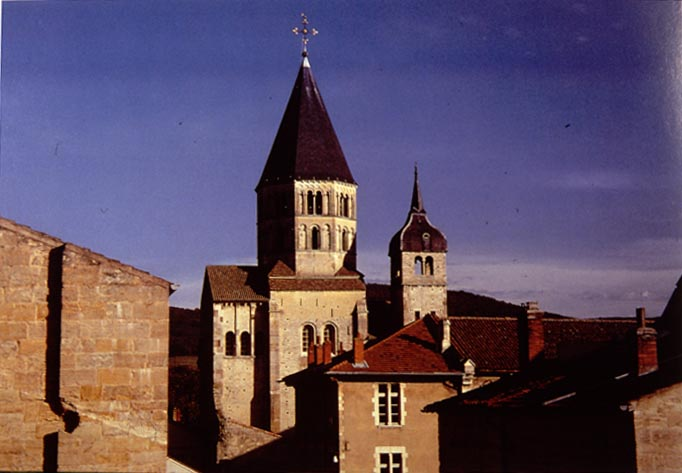
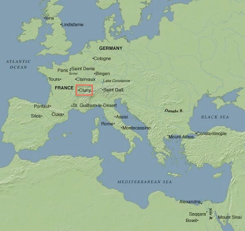
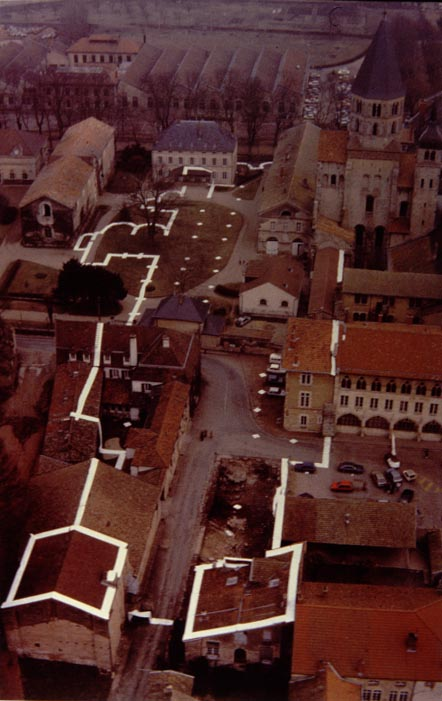

 |
Cluny: a medieval monastery |
In 910 William the Pious, Duke of Aquitaine, founded a monastery. It was in a relatively rural location, right on the border of France and Germanic areas, but close to main north-south roads. In charge of it he placed St. Berno, then Abbot of Gigny, under whose guidance a somewhat new and stricter form of Benedictine life was inaugurated. By the twelfth century Cluny was at the head of an order consisting of some 314 monasteries. These were spread over France, Italy, the Empire, Lorraine, England, Scotland, and Poland. According to the "Bibliotheca Cluniacensis" (Paris, 1614) 825 houses owed allegiance to the Abbot of Cluny in the fifteenth century. During the first 250 years of its existence Cluny was governed by a series of remarkable abbots, men who have left their mark upon the history of Western Europe and who were prominently concerned with all the great political questions of their day. It became a home of learning and a training school for popes, four of whom, Gregory VII (Hildebrand), Urban II, Paschal II, and Urban V, were called from its cloisters.
|
 |
Cluny declined somewhat after the mid-twelfth century, as more monastic reforms were instituted elsewhere. At the suppression of monasteries in 1790 it was bought by the town and almost entirely destroyed. At the present day only one tower and part of a transept remain of the original church, while a road traverses the site of the nave. The site was excavated 1928-50 by Kenneth John Conant, who made reconstructions of what had been there, based on archaeological evidence, texts describing the monastery, and drawings and descriptions of it made before it was destroyed. |  |
The monastery and its church were successively enlarged during its first 250 years, in three main phases: